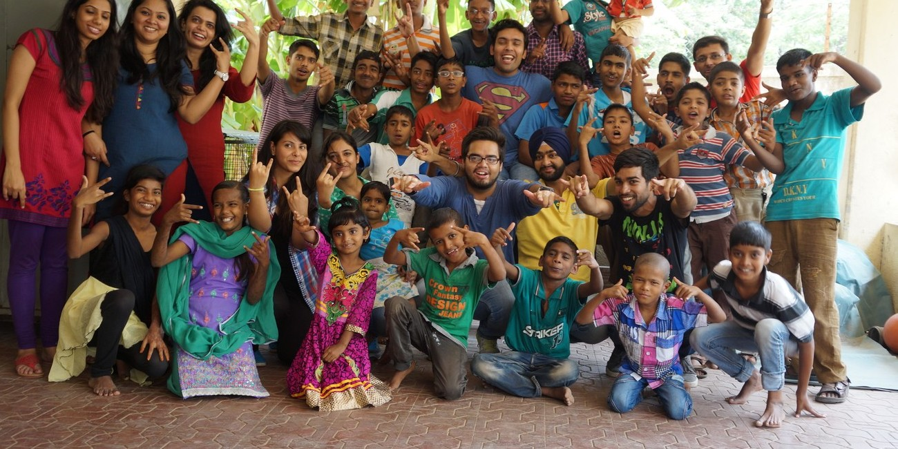
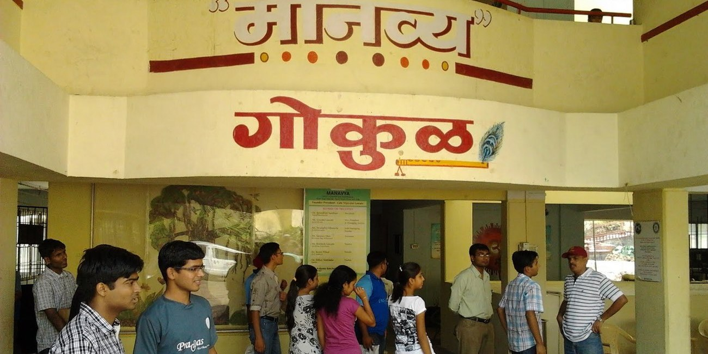
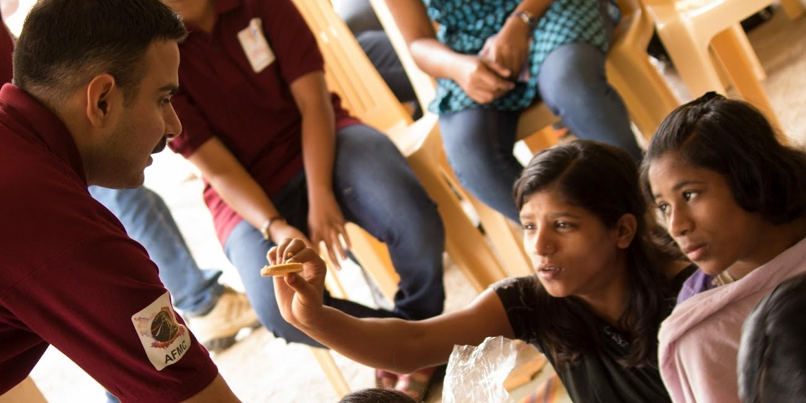
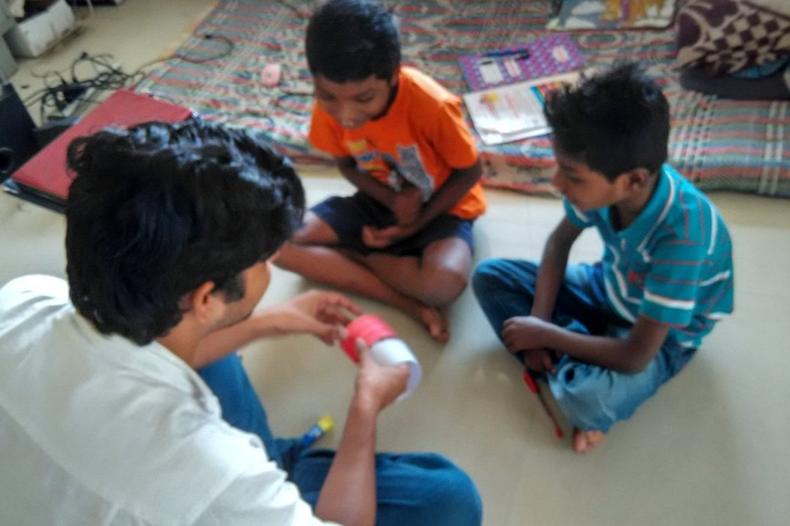

- 
- 
- 
Manavya (which means "Humanity" in Marathi Language) is a non-government organization (NGO) in India, founded by Vijaya Lawate, for rehabilitating children and women affected by HIV/AIDS. Manavya established Gokul, a home for HIV+ children situated in Bhugaon, Pune which offers shelter, education, vocational opportunities, nutritional diet and medical treatment and assistance including Anti Retroviral Treatment (ART).The Gokul shelter has a government-recognized home for children diagnosed with HIV.

Manavya is situated in a remote part of a village situated in outskirts of Pune City. Physical connectivity here is still a difficult task. In such environment digital connctivity feels like distant dream. But it can be achieved by a satellite internet connection. Roshan need to raise 8000 Rs. for this. If you want to collaborate with Roshan, contact us with subject - "Manavya - Roshan".